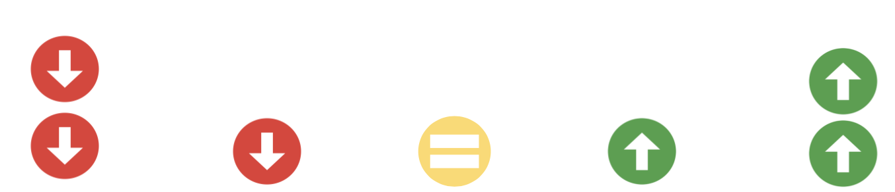
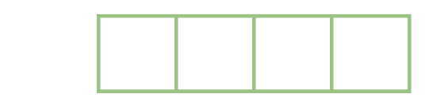

<!DOCTYPE html>
<html lang="en">
<head>
  <meta charset="UTF-8">
  <title>Consumption Experiment</title>
  <script src="./jspsych/jspsych.js"></script>
  <script src="./jspsych/plugin-html-slider-response.js"></script>
  <script src="./jspsych/plugin-html-button-response.js"></script>
  <script src="./jspsych/plugin-survey-html-form.js"></script>
  <link href="./jspsych/jspsych.css" rel="stylesheet" />
  <script src="./jspsych/plugin-survey-text.js"></script>
  <script src="jspsych/plugin-instructions.js"></script>
  <script src="https://unpkg.com/@jspsych-contrib/plugin-pipe"></script>
  <script src="./jspsych/plugin-preload.js"></script>
  <link href="https://unpkg.com/jspsych@8.2.1/css/jspsych.css" rel="stylesheet" type="text/css" />
</head>
<link rel="stylesheet" href="style.css">
</head>
<body>
<script>
  document.addEventListener('DOMContentLoaded', function() {
      const jsPsych = initJsPsych({
  });

/* ================= DATA ================= */
const subject_id = jsPsych.randomization.randomID(10);
//const filename = `${subject_id}.csv`;
/*experiment variables*/
const mturk_pilot_mode = false
/*capture info from mturk/connect, except in test mode*/
if(mturk_pilot_mode) { 
    var study_id = 'test';
    var session_id = 'test';
    participant_id = 'test_' + String(jsPsych.randomization.randomID(10)) //overwrite the participant id
} else {
    participant_id = jsPsych.data.getURLVariable('participantId'); 
    var assignment_id = jsPsych.data.getURLVariable('assignmentId');
    var project_id = jsPsych.data.getURLVariable('projectId');
}
jsPsych.data.addProperties({
  mturk_participant_id: "participant_id",
  mturk_assignment_id: "assignment_id",
  mturk_project_id: "project_id"
})
const filename = `${participant_id}.csv`;

var preload = {
      type: jsPsychPreload,
      auto_preload:true
    };

/* ================= STIMULI ================= */
const categories = {
  food: {
    stimuli: [
      {
        label: "Cookie 🍪",
        need: "X wants to grab <b>8</b> cookies from the kitchen.",
        base_action: "cookies",
        unit: "cookies",
        verb: "grabs",
        emoji: "🍪",
        followUp: amt => `Now she has grabbed ${amt}.`,
        past: "grabbed",
        before: "she had grabbed any cookies",
        explanation: "grabbed 1 cookie"
      },
      {
        label: "Ice cream 🍦",
        need: "X wants to scoop <b>8</b> scoops of ice cream into her bowl.",
        base_action: "scoops of ice cream",
        unit: "scoops of ice cream",
        verb: "scoops",
        emoji: "🍦",
        followUp: amt => `Now she has scooped ${amt}.`,
        past: "scooped",
        before: "she had scooped any ice cream",
        explanation: "scooped 1 scoop of ice cream"
      },
      {
        label: "Soda 🥤",
        need: "X wants to take <b>8</b> cans of soda from the fridge.",
        base_action: "cans of soda",
        unit: "cans of soda",
        verb: "takes",
        emoji: "🥤",
        followUp: amt => `Now she has taken ${amt}.`,
        past: "took",
        before: "she had taken any soda",
        explanation: "took 1 can of soda"
      },
      {
        label: "Candy 🍬",
        need: "X wants to grab <b>8</b> candies from the drawer.",
        base_action: "candy",
        unit: "candies",
        verb: "grabs",
        emoji: "🍬",
        followUp: amt => `Now she has grabbed ${amt}.`,
        past: "grabbed",
        before: "she had grabbed any candy",
        explanation: "grabbed 1 candy"
      },
      {
        label: "Hot chicken legs 🍗",
        need: "X wants to place <b>8</b> hot chicken legs onto her plate.",
        base_action: "hot chicken legs onto her plate",
        unit: "hot chicken legs onto her plate",
        verb: "places",
        emoji: "🍗",
        followUp: amt => `Now she has placed ${amt}.`,
        past: "placed",
        before: "she had placed any chicken legs",
        explanation: "placed 1 chicken leg on her plate"
      },
      {
        label: "Healthy fruits 🍊",
        need: "X wants to pick <b>8</b> healthy fruits from the basket.",
        base_action: "healthy fruits",
        unit: "healthy fruits",
        verb: "picks",
        emoji: "🍊",
        followUp: amt => `Now she has picked ${amt}.`,
        past: "picked",
        before: "she had picked any fruits",
        explanation: "picked 1 healthy fruit"
      }
    ]
  },
  sensory: {
    stimuli: [
      {
        label: "Light 💡",
        need: "X is renovating her house and wants to stock <b>4</b> light bulbs.",
        base_action: "light bulb",
        unit: "light bulbs",
        verb: "stocks",
        emoji: "💡",
        followUp: amt => `Now she has stocked ${amt}.`,
        past: "stocked",
        before: "she had stocked any light bulbs",
        explanation: "stocked 1 light bulb"
      },
      {
        label: "Sound 🔊",
        need: "X is upgrading her home studio and wants to stock <b>4</b> new speakers.",
        base_action: "speaker",
        unit: "speakers",
        verb: "stocks",
        emoji: "🔊",
        followUp: amt => `Now she has stocked ${amt}.`,
        past: "stocked",
        before: "she had stocked any speakers",
        explanation: "stocked 1 speaker"
      },
      {
        label: "Temperature 🌡️",
        need: "X is preparing for winter and wants to stock <b>4</b> heaters.",
        base_action: "heater",
        unit: "heaters",
        verb: "stocks",
        emoji: "🌡️",
        followUp: amt => `Now she has stocked ${amt}.`,
        past: "stocked",
        before: "she had stocked any heaters",
        explanation: "stocked 1 heater"
      },
      {
        label: "Scent 🧴",
        need: "X is organizing her perfume cabinet and wants to stock <b>4</b> bottles of perfume.",
        base_action: "bottle of perfume",
        unit: "bottles of perfume",
        verb: "stocks",
        emoji: "🧴",
        followUp: amt => `Now she had stocked ${amt}.`,
        past: "stocked",
        before: "she had stocked any perfume",
        explanation: "stocked 1 bottle of perfume"
      },
      {
        label: "Taste 🧂",
        need: "X is preparing a spice cabinet and wants to stock <b>4</b> bottles of salt.",
        base_action: "bottle of salt",
        unit: "bottles of salt",
        verb: "stocks",
        emoji: "🧂",
        followUp: amt => `Now she has stocked ${amt}.`,
        past: "stocked",
        before: "she had stocked any salt",
        explanation: "stocked 1 bottle of salt"
      }
    ]
  },
  entertainment: {
    stimuli: [
      {
        label: "Gaming 🎮",
        need: "X wants to add <b>4</b> new games to his game library.",
        base_action: "game",
        unit: "games",
        verb: "added",
        emoji: "🎮",
        followUp: amt => `Now he has added ${amt}.`,
        past: "added",
        before: "he had added any games",
        explanation: "added 1 game"
      },
      {
        label: "Watching TV 📺",
        need: "X wants to download <b>4</b> TV episodes for his flight.",
        base_action: "TV episode",
        unit: "TV episodes",
        verb: "downloads",
        emoji: "📺",
        followUp: amt => `Now he has downloaded ${amt}.`,
        past: "downloaded",
        before: "he had downloaded any episodes",
        explanation: "downloaded 1 TV episode"
      },
      {
        label: "Scrolling Social Media 📱",
        need: "X wants to subscribe to <b>4</b> new Instagram content creaters.",
        base_action: "content creator",
        unit: "content creators",
        verb: "subscribes to",
        emoji: "📱",
        followUp: amt => `Now he has subscribed to ${amt}.`,
        past: "subscribed to",
        before: "he had subscribed to any creators",
        explanation: "subscribed to 1 content creator"
      },
      {
        label: "Reading 📖",
        need: "X wants to stock <b>4</b> books on his bookshelf.",
        base_action: "book",
        unit: "books",
        verb: "stocks",
        emoji: "📖",
        followUp: amt => `Now he has stocked ${amt}.`,
        past: "stocked",
        before: "he had stocked any books",
        explanation: "stocked 1 book"
      },
      {
        label: "Drawing 🎨",
        need: "X ran out of painting supplies wants to stock <b>4</b> new paint tubes.",
        base_action: "paint tube",
        unit: "paint tubes",
        verb: "stocks",
        emoji: "🎨",
        followUp: amt => `Now he has stocked ${amt}.`,
        past: "stocked",
        before: "he had stocked any paint tubes",
        explanation: "stocked 1 paint tube"
      }
    ]
  }
};

/* ================= HELPERS ================= */
function dynamicFollowupPrompt() {
  const last_response = jsPsych.data.get().last(1).values()[0].response;
  if (last_response >= 75) {
    return "Why did you think her feeling would become much better after this?";
  } else if (last_response >= 55) {
    return "Why did you think her feeling would become a bit better after this?";
  } else if (last_response >= 45) {
    return "Why did you think her feeling would not change after this?";
  } else if (last_response >= 25) {
    return "Why did you think her feeling would become a bit worse after this?";
  } else {
    return "Why did you think her feeling would become much worse after this?";
  }
}

function buildVisual(nEmoji, emoji, cat, childImg, childName, isBonus = false){
  const gridSrc = 'img/grid4.png';
  const extraPad = (cat === 'entertainment' || cat === 'sensory') ? ' style="padding-left:280px;"' : '';
  const inc = (cat === 'food' || cat === 'social') ? 2 : 1;
  const oldCount = isBonus ? nEmoji : nEmoji - inc;
  console.log(oldCount)
  return `
    <div class="visual-wrapper ${cat}">
      <div class="emoji-bubble">${emoji}</div>
      
      ${
        (cat === 'food' || cat === 'social')
          ? `<div class="grid-wrapper">
               
               ${Array.from({ length: nEmoji }).map((_, idx) => {
                 const pairIndex = Math.floor(idx / 2);
                 const posClass = idx % 2 === 0 ? 'top-left' : 'bottom-right';
                 // grayscale if old emoji or if bonus trial
                 const shouldGray = isBonus || idx < oldCount;
                 return `<span class="grid-emoji ${posClass}${shouldGray ? ' old-emoji' : ''}" style="transform: translateX(${pairIndex * 50}px)${shouldGray ? '; filter: grayscale(100%); opacity: 0.5;' : ''}">${emoji}</span>`;
               }).join('')}
             </div>`
          : `
   <div class="emoji-track"${extraPad}>
     ${Array.from({ length: nEmoji }).map((_, idx) => {
       const shouldGray = isBonus || idx < oldCount;
       return `<span style="${shouldGray ? 'filter: grayscale(100%); opacity: 0.5;' : ''}">${emoji}</span>`;
     }).join('')}
   </div>`
      }
    </div>`;
}

// --- helper to map slider positions to tutorial images ---
function positionToImage(pos){
  const map = {
    0:  'muchworse.png',
    25: 'littleworse.png',
    50: 'nochange.png',
    75: 'littlebetter.png',
    100:'muchbetter.png'
  };
  return map[pos];
}

// --- helper to verbal‑describe slider positions for feedback ---
function sliderPosDesc(value){
  if(value === 0)   return 'on the far left';
  if(value === 100) return 'on the far right';
  if(value === 50)  return 'in the middle';
  return value < 50 ? 'somewhat to the left' : 'somewhat to the right';
}

function sliderTrial({ visual, need, msg, cat, label, amt, n }) {
  return {
    type: jsPsychHtmlSliderResponse,
    stimulus: visual + `<p>${msg}</p>` +
              ``,
    labels: ["Much worse","A little worse","No change","A little better","Much better"],
    min: 0, max: 100, slider_start: 50, require_movement: true,
    prompt: `<p style="text-align:center; margin-top:20px;">Drag the slider to indicate your answer.</p>`,
    data: { category: cat, stimulus_label: label, trial_number: n, amount: amt }
  };
}

function attentionCheck(direction) {
  const txt = direction === 'right'
    ? "Please drag the slider all the way to the right, and click continue."
    : "Please drag the slider all the way to the left, and click continue.";
  return {
    type: jsPsychHtmlSliderResponse,
    stimulus: `<p>${txt}</p>` +
              ``,
    labels: ["Much worse","A little worse","No change","A little better","Much better"],
    min: 0, max: 100, slider_start: 50, require_movement: true,
    prompt: `<p style="text-align:center; margin-top:20px;">Drag the slider to indicate your answer.</p>`,
    data: { attention_check: true, correct_direction: direction },
    on_finish: d => { d.correct = (direction === 'right' ? d.response === 100 : d.response === 0); }
  };
}


/* ================= START ================= */
var duration = '10 minutes';
    var amount = '$2.50';
    var consent = {
        type: jsPsychHtmlButtonResponse,
        stimulus: '<p><b>Consent Form</b></p> <div style="text-align:left; background-color:lightblue; padding:2vw; max-width:80vw;">' +
            '<p style="text-align:left;"><b>Purpose:</b> The purpose of this study is to understand ' +
            'how people think about actions of others.</p>' +
            '<p style="text-align:left;"><b>Procedures:</b> In this study, you will read sentences, ' +
            'see pictures, and use sliders to answer simple questions ' +
            'about them. This study should take approximately ' + duration + '.</p>' +
            '</p><p style="text-align:left;"><b>Participation:</b> Participation in this study is ' +
            'voluntary. If you decide to join now, you can change your mind ' +
            'later. ' +
            '</p><p style="text-align:left;"><b>Payment:</b> You will be paid $15.00/hour ' +
            'for participating in this study. Given the estimated duration of ' +
            duration + ', your payment will amount to ' + amount + '.</p>' +
            '<p style="text-align:left;"><b>Risks and benefits:</b> There are no risks associated ' +
            'with participating in this study. There are no direct benefits ' +
            'associated with participating in this study. </p><p style="text-align:left;"><b>Use of ' +
            'data by study researchers:</b> The research team led by Shari ' +
            'Liu at JHU will have access to your answers. ' +
            '</p><p style="text-align:left;"><b>Publication of results:</b> The results of the research ' +
            'may be presented at scientific meetings or published in scientific ' +
            'journals. Your individual responses may be published. We will ' +
            'never publish your name, the date that you participated, and any other ' +
            'information that could be used to identify you. </p><p style="text-align:left;"><b>' +
            'Researcher contact information:</b> This study is run by Dr. ' +
            'Shari Liu at JHU. If you have any questions or concerns about ' +
            'this study, or in the very unlikely event of a research-related ' +
            'injury, please contact sliu199@jhu.edu. ' +
            '</p><p style="text-align:left;"><b>Research rights information:</b> If you have questions about ' +
            'your rights as a research participant or feel that you have not ' +
            'been treated fairly, please call the Homewood Institutional Review ' +
            'Board at Johns Hopkins University at (410) 516-6580. If you have ' +
            'any questions or issues completing the survey, please email Shari ' +
            'Liu at sliu199@jhu.edu. </p> </div>' +
            '<p> Do you consent to participate? </p>',
        choices: ['Yes', 'No'],
        data: {trial_id: 'consent'},
        on_finish: function(data) {
        if (data.response === 1) {  // If 'No' is chosen 
        jsPsych.abortExperiment('You did not consent to participate. The study will now end. Thank you for your time.');  
        }
        }
    };

/* ================= INTRO ================= */
const intro = {
  type: jsPsychHtmlButtonResponse,    
  stimulus: `
    <div class="intro-screen">
      <h2>Welcome to the study!</h2>
      <p>In this study, you will read short descriptions about a character who receives something they want — like food, light, and so on.</p>
      <p>You will use sliders to indicate your answers to questions.</p>
      <p>The study will start with short tutorials on the sliders, followed by the tasks. </p>
      <p>Click “Continue” to begin a short tutorial.</p>
    </div>`,
  choices: ['Continue']            
};

/* ================= TUTORIAL ================= */
const tutorialItems = [
  // tutorial pages
  { html: `<p>People perform various activities, and their feelings may change after each one.<br>Your job is to use the slider below to rate how her feelings change after the activity.</p>`, pos: 50 },
  { html: `<p>If someone feels <b>much worse</b> than before, the slider should look like this.</p>`, pos: 0 },
  { html: `<p>If someone feels <b>a little worse</b> than before, the slider should look like this.</b>.</p>`, pos: 25 },
  { html: `<p>If someone's feeling <b>does not change</b>, the slider should look like this.</p>`, pos: 50 },
  { html: `<p>If someone feels <b>a little better</b> than before, the slider should look like this.</b>.</p>`, pos: 75 },
  { html: `<p>If someone feels <b>much better</b> than before, the slider should look like this.</p>`, pos: 100 },
  // comprehension check items
  { text: 'much worse',      value: 0,   feedback: 'Wrong. “Much worse” goes on the far left.' },
  { text: 'a little worse',  value: 25,  feedback: 'Wrong. “A little worse” is somewhat left of center.' },
  { text: 'no change',       value: 50,  feedback: 'Wrong. “No change” is in the center.' },
  { text: 'a little better', value: 75,  feedback: 'Wrong. “A little better” is somewhat right of center.' },
  { text: 'much better',     value: 100, feedback: 'Wrong. “Much better” goes on the far right.' }
];

const tutorial = tutorialItems.map((item, idx) => {
  if (idx === 0 && item.html) {
    return {
      type: jsPsychHtmlSliderResponse,
      stimulus: item.html + ``,
      labels: ["Much worse","A little worse","No change","A little better","Much better"],
      min: 0, max: 100, slider_start: item.pos, require_movement: false,
      prompt: `<p style="text-align:center; margin-top:20px;">Drag the slider to indicate your answer.</p>`,
      data: { tutorial_page: idx + 1 }
    };
  }
  // Show static image for instructional tutorial items (those with item.html)
  if (item.html) {
    return {
      type: jsPsychHtmlButtonResponse,
      stimulus: item.html + ``,
      choices: ['Continue'],
      data: { tutorial_page: idx + 1 }
    };
  }
  // comprehension check (remains interactive)
  return {
    type: jsPsychHtmlSliderResponse,
    stimulus: (idx === 6 ? `<p><b>Now let's check if you understand how this works!</b></p>` : '') + `<p>If someone feels <b>${item.text}</b> than before, where should the slider go?</p>` +
              ``,
    labels: ["Much worse","A little worse","No change","A little better","Much better"],
    min: 0, max: 100,
    slider_start: 50,
    require_movement: true,
    prompt: `<p style="text-align:center; margin-top:20px;">Drag the slider to indicate your answer.</p>`,
    data: { tutorial_page: idx + 1 },
    on_finish: function(data) {
      const correct = Math.abs(data.response - item.value) <= 20;
      data.correct = correct;
    }
  };
});

// feedback pages for wrong responses
const feedbacks = tutorialItems.map((item, idx) => ({
  timeline: [{
    type: jsPsychHtmlSliderResponse,
    stimulus: `<p style="color:red;"><b>Wrong.</b></p>
               <p>If someone feels <b>${item.text}</b> than before, the slider should be <b>${sliderPosDesc(item.value)}</b>.</p>` +
             ``,
    labels: ["Much worse","A little worse","No change","A little better","Much better"],
    min: 0,
    max: 100,
    slider_start: item.value,
    require_movement: false,
  }],
  conditional_function: function() {
    const last = jsPsych.data.get().last(1).values()[0];
    return !last.correct;
  }
}));

// feedback for correct responses (confirmation page)
const correctFeedback = {
  timeline: [{
    type: jsPsychHtmlButtonResponse,
    stimulus: `<p style="color:green; font-weight:bold;">✅ Correct!</p>`,
    choices: ['Continue']
  }],
  conditional_function: function() {
    const last = jsPsych.data.get().last(1).values()[0];
    return last.correct;
  }
};

// merge tutorial and feedbacks into one sequence
const tutorialSequence = [];
tutorial.forEach((trial, i) => {
  tutorialSequence.push(trial);
  if (!tutorialItems[i].noSlider && !tutorialItems[i].html) {
    tutorialSequence.push(feedbacks[i]);
    tutorialSequence.push(correctFeedback);
  }
});

/* ================= TRANSITION ================= */
var transition_expt1 = {
  type: jsPsychHtmlButtonResponse,
  stimulus:
    `<div class="intro-screen">
      <p><b>You are all set to go!</b></p>
      <p>In the upcoming task, you will read short scenarios about a character who receives something they want.</p>
      <p>After each change, you’ll rate how you think the character's feeling changes using the slider.</p>
      <p>You are not evaluating the character’s feeling overall but how their feelings might have changed in each scenario.</p>
      <p><br>When you're ready to begin, please click "Continue".</p>
    </div>`,
  choices: ['Continue']
};

/* ================= DEMOGRAPHICS ================= */
const feedback_demographics = {
  type: jsPsychSurveyHtmlForm,
  html: '<div style="max-width:700px; text-align:center;"> <p>' +
                'What factors influenced how you decided to respond? Do you' +
                ' have any questions or comments regarding the experiment?' +
                '</p> <textarea name="feedback" cols="40" rows="6"' +
                ' "autofocus"></textarea> <p> Please provide the following' +
                ' information to complete the study. </p> <div style="text-' +
                'align:center;"> <div style="text-align:left; display:' +
                'inline-block; margin-right:20px; line-height:1.8em;"> <ol>' +
                    '<li>Age:</li> <br>' +
                    '<li>Gender:</li> <br><br>' +
                    '<li>Race:</li> <br><br><br><br><br><br>' +
                    '<li>Ethnicity:</li>' +
                '</ol> </div>' +
                '<div style="text-align:left; display: inline-block;' +
                ' line-height:1.8em;">' +
                    // age text box
                    '<input name="age" type="number"  min="18" max="100" /> <br> <br>' +
                    // gender options
                    '<input name="gender" type="radio" id="female" value=' +
                        '"Female" /> <label for="female"> Female </label>' +
                    '<input name="gender" type="radio" id="male" value=' +
                        '"Male" /> <label for="male"> Male </label>' +
                    '<input name="gender" type="radio" id="nonbinary" value=' +
                        '"Non-binary" /> <label for="nonbinary"> Non-binary </label> <br>' +
                    '<input name="gender" type="radio" id="other_gender" value=' +
                        '"other_gender" /> <label for="other_gender"> Other: <input' +
                        ' type="text" name="other_gender" /> </label> <br><br>' +
                    // race options
                    '<input name="race" type="radio" id="white" value=' +
                        '"White" /> <label for="white"> White </label> <br>' +
                    '<input name="race" type="radio" id="black" value=' +
                        '"Black/African American" /> <label for="black">' +
                        ' Black/African American </label> <br>' +
                    '<input name="race" type="radio" id="am_ind" value=' +
                        '"American Indian/Alaska Native" /> <label for="am_ind">' +
                        ' American Indian/Alaska Native </label> <br>' +
                    '<input name="race" type="radio" id="asian" value=' +
                        '"Asian" /> <label for="asian"> Asian </label> <br>' +
                    '<input name="race" type="radio" id="pac_isl" value=' +
                        '"Native Hawaiian/Pacific Islander" /> <label for="pac_isl">' +
                        ' Native Hawaiian/Pacific Islander </label> <br>' +
                    '<input name="race" type="radio" id="other_race" value="other_race" />' +
                        '<label for="other_race"> Other: <input type="text"' +
                        'name="other_race" /> </label> <br><br>' +
                    // ethnicity options
                    '<input name="ethnicity" type="radio" id="hisp" value=' +
                        '"Hispanic" /> <label for="hisp"> Hispanic </label>' +
                    '<input name="ethnicity" type="radio" id="nonhisp" value=' +
                        '"Non-Hispanic" /> <label for="nonhisp"> Non-Hispanic' +
                        ' </label>' +
                '</div> </div>' +
                '<p> Please press the finish button to complete the experiment. </p> </div>',
  button_label: 'Submit',
  data: { trial_id: 'demographics_survey' },
  on_finish: function(data) {
    const r = data.response;
    if (r.gender === "Other" && r.gender_other) r.gender = r.gender_other;
    if (r.race === "Other" && r.race_other) r.race = r.race_other;
    data.feedback = r.feedback;
    data.age = r.age;
    data.gender = r.gender;
    data.race = r.race;
    data.ethnicity = r.ethnicity;
  }
};

const save_data = {
                type: jsPsychPipe,
                action: "save",
                experiment_id: "KOYuJppiQBb9",
                filename: filename,
                data_string: ()=>jsPsych.data.get().csv()
              };

var urlvar = jsPsych.data.urlVariables();
jsPsych.data.addProperties({
  url: urlvar
});

/* ================= DEBRIEF ================= */
var debrief = {
        type: jsPsychInstructions,
        pages: [
            '<p style="font-size: 20px;"><strong>Debrief</strong></p>' +
            '<p><br>Thank you so much for helping us with this study!</p>' +
            '<br><p style = "max-width:800px;">In this study, we asked you questions about how characters\' feelings would change as they receive more of a desirable item. ' +
            'The goal is to test the hypothesis that people intuitively think that the additional satisfaction gained from each extra unit decreases over time, and may ultimately become negative. ' +
            '</p><br><p style = "max-width:800px;">Next up, we have a few final questions about yourself and your experience today.</p>'
        ],
        show_clickable_nav: true,
        button_label_next: 'Next'
        };

/* ================= TIMELINE ================= */
const timeline = [preload, consent, intro, ...tutorialSequence, transition_expt1];
//const timeline = [transition_expt1];

let attentionIndex = 0;
const childMap = {
  food: { name: 'Akira', img: 'AkiraBubble' },
  sensory: { name: 'Olivia', img: 'OliviaBubble' },
  entertainment: { name: 'Jack', img: 'JackBubble' },
  social: { name: 'Jaden', img: 'JadenBubble' }
};

  // Randomize the order of conditions
  const categoryOrder = jsPsych.randomization.shuffle(Object.keys(categories));
  categoryOrder.forEach(cat => {
    const grp = categories[cat];
  const stim = jsPsych.randomization.sampleWithoutReplacement(grp.stimuli, 1)[0];
  const { name, img } = childMap[cat];
  const inc = (cat === 'food' || cat === 'social') ? 2 : 1;
  const attentionPos = Math.floor(Math.random() * 10) + 1;
  const pronoun = (cat === 'food' || cat === 'sensory') ? 'she' : 'he';
  const pronoun2 = (cat === 'food' || cat === 'sensory') ? 'her' : 'his';

  // Need only empty grid page
  const need = stim.need.replace(/X/g, name);
  timeline.push({
    type: jsPsychHtmlButtonResponse,
    stimulus: `<div class="visual-wrapper">
                 <p>${need}</p>
                 <div class="child-wrapper">
                 <div class="emoji-bubble need-page ">${stim.emoji}</div>
                 
                 <div>
                 
               </div>`,
    choices: ['Continue'],
    data: { type: 'need_page', category: cat, stimulus_label: stim.label }
  });

  // Follow Up Question!!!
  const followupCandidates = Array.from({ length: 11 }, (_, i) => i + 1); 
  const selectedFollowupTrial = jsPsych.randomization.sampleWithoutReplacement(followupCandidates, 1)[0];

  for (let trial = 1; trial <= 10; trial++) {
    const amount   = inc * trial;
    const need     = stim.need.replace(/X/g, name);
    const amountBase = `<b>${amount}</b> ${stim.base_action}`;
    const amountStr = `<b>${amount}</b> ${stim.unit}`;
    // Insert explanation definition here
    const explanation = `<p><i>${stim.emoji} = ${stim.explanation.replace(/X/g, name)}</i></p>`;
    const msg = (trial === 1)
      ? `${explanation}<br>${name} ${stim.verb} <b>${amount} ${stim.base_action}</b>. <br> How do you think ${pronoun2} feeling would change, compared to before ${stim.before}</b>?`
      : (() => {
          const previousAmount = amount - inc;
          return `${explanation}<br>${name} ${stim.verb} <b>${inc} more ${inc === 1 ? stim.base_action : stim.unit}</b>. ${stim.followUp(`<b>${amount} ${stim.unit}</b>`).replace(/X/g, name)} <br> How do you think ${pronoun2} feeling would change, <b>compared to when ${pronoun} ${stim.past} ${previousAmount} ${previousAmount === 1 ? stim.base_action : stim.unit}?</b>`;
        })();
    const visual = `<p>${need}</p>` + buildVisual(amount, stim.emoji, cat, img, name);
    timeline.push(
      sliderTrial({
        visual,
        need,
        msg,
        cat,
        label: stim.label,
        amt: amount,
        n: trial
      })
    );

    if (trial === selectedFollowupTrial) {
      timeline.push({
        type: jsPsychSurveyText,
        questions: [{
          prompt: dynamicFollowupPrompt,
          rows: 3,
          columns: 50
        }],
        data: {
          followup_for: `${cat}_${stim.label}`,
          trial_type: 'followup'
        }
      });
    }
    if (trial === attentionPos) {
      const direction = (attentionIndex % 2 === 0) ? 'left' : 'right';
      attentionIndex++;
      timeline.push(
        attentionCheck(direction)
      );
    }
  }

  // ---- bonus trial 100 + n ----
  const lastAmount = inc * 10;
  const bonusAmt   = 100 + lastAmount;
  const bonusNeed  = stim.need.replace(/X/g, name);
  const bonusStr   = `<b>${bonusAmt}</b> ${stim.unit}`;
  const bonusMsg   = `${name} ${stim.verb} <b>100 more ${stim.unit}</b>. ${stim.followUp(bonusStr).replace(/X/g, name)} <br> How do you think ${pronoun2} feeling would change, <b>compared to when ${pronoun} ${stim.past} ${lastAmount} ${stim.unit}</b>?`;
  const bonusCount = (cat === 'food' || cat === 'social') ? 8 : 4;
  const bonusVis = `<p>${bonusNeed}</p>` +
                   `<div style="display:inline-block; position:relative;">` +
                     buildVisual(bonusCount, stim.emoji, cat, img, name, true) +
                     `` +
                   `</div>`;

  timeline.push(
    sliderTrial({
      visual: bonusVis,
      need: bonusNeed,
      msg: bonusMsg,
      cat,
      label: stim.label,
      amt: bonusAmt,
      n: 11
    })
  );

  // Insert follow-up question if bonus trial is the selected follow-up
  if (11 === selectedFollowupTrial) {
    timeline.push({
      type: jsPsychSurveyText,
      questions: [{
        prompt: dynamicFollowupPrompt,
        rows: 3,
        columns: 50
      }],
      data: {
        followup_for: `${cat}_${stim.label}`,
        trial_type: 'followup'
      }
    });
  }
});

  // ===== Thank-you and data submission =====
  const thankYou = {
    type: jsPsychHtmlButtonResponse,
    stimulus: `<div class="intro-screen"><h2>Thank you for participating!</h2></div>`,
    choices: ['Finish'],
  };
  // Insert feedback_demographics just before thankYou
  timeline.push(debrief);
  timeline.push(feedback_demographics);
  timeline.push(save_data)
  timeline.push(thankYou);
  jsPsych.run(timeline);
  })
</script>
</body>
</html>